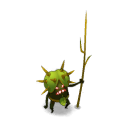
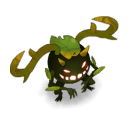
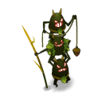
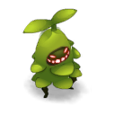

Combats tactiques / Quête « Le serment de l'ambre »
Ocre d'ambre · le Memory des Malters
32 Malters cachés sur 4 îlots (8 par îlot), 4 types, et 16 paires à former avant le tour 31, sinon tu es OS. Note ici ce que tu détectes: la page te dit quelles paires révéler ensemble.
- PV
- 50
- PA
- 12
- PM
- 6
- Tours
- 31
Clic gauche: applique l'outil choisi sur une case. Clic droit (ou même outil une 2e fois): efface la case.
Les monstres du combat

MalépikType à apparier
MalboisType à apparier
MaltrioType à apparier
MalzerbType à apparier Malter dissimuléMalter pas encore identifié (case blanche sur la carte)
Malter dissimuléMalter pas encore identifié (case blanche sur la carte) Malter démoniaqueChange d'îlot tous les 2 tours : 10 de dégâts si tu finis dans sa ligne de vue
Malter démoniaqueChange d'îlot tous les 2 tours : 10 de dégâts si tu finis dans sa ligne de vue
Rappel des sorts
- Prescience de Terrakourial (2 PV): glyphe sous chaque Malter en ligne de vue, sans le type; indique le nombre restant par îlot.
- Perception ambrée (1 PV, remboursé si touché): révèle un Malter sur toute la carte. Deux Malters du même type révélés le même tour sont tués (+2 PV). Une fois 2 révélés, plus de lancer ce tour.
- Intuition fossile (0 PV, 1/tour): donne le type des Malters en croix de taille 1, sans les révéler, même sans ligne de vue.
- Bouclier d'ambre (3 PV, relance 4 tours): invulnérable un tour.
- Le Malter démoniaque fait 10 de dégâts si tu finis ton tour dans sa ligne de vue; les Malters révélés non pairés, 1.
Règles du combat d'après le guide de Dofus pour les Noobs. La carte est reconstituée à partir d'une capture: dis-moi s'il manque une case ou un obstacle.